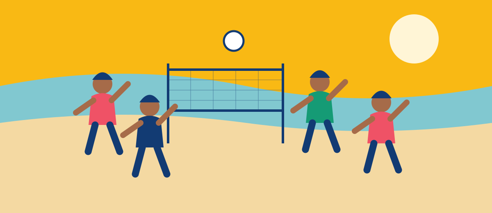

Beach-volley gratuit
Rendez-vous à la plage, sans niveau requis.
Erasmove rassemble les étudiants internationaux et locaux autour d’activités sportives accessibles à Málaga. Découvre la ville, pratique à ton rythme et rencontre de nouvelles personnes, quel que soit ton niveau.
Rejoins l’aventure →
Rendez-vous à la plage, sans niveau requis.
Découvre un sport convivial en petit groupe.
Explore les paysages andalous ensemble.
Pas besoin de connaître quelqu’un pour participer. Nous constituons les groupes sur place.
Rejoins l’aventure →